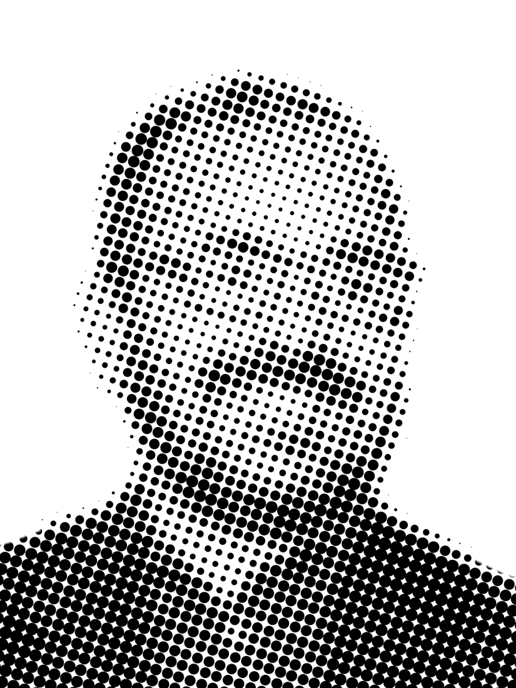

Product design for 20+ years.
Luis Ponce de León · Portland, OR · Open to new workPonceDesign is a design studio for digital products and AI, shaping complex ideas into elegant, intuitive solutions. Depth in UX strategy, motion graphics, rich media and design systems.

20+Years in product design
14Case studies
12Brands, IBM to WIRED
Selected Work
Product design · 2014–2026Twenty years of making it legible. I design it, then I build it.
SCAD, Razorfish, Viewpoint, WebMD, Vacasa and Seismic, for clients including IBM, Intel, WIRED, the American Red Cross, BlueCross BlueShield and GE. I lead medium-to-large UX projects, run research programs, and mentor the designers around me.
My MFA is in video, so motion keeps showing up in my product work as the fastest way to explain a system. I write my own front-end, so what I hand engineering I already know can be built.
Résumé →